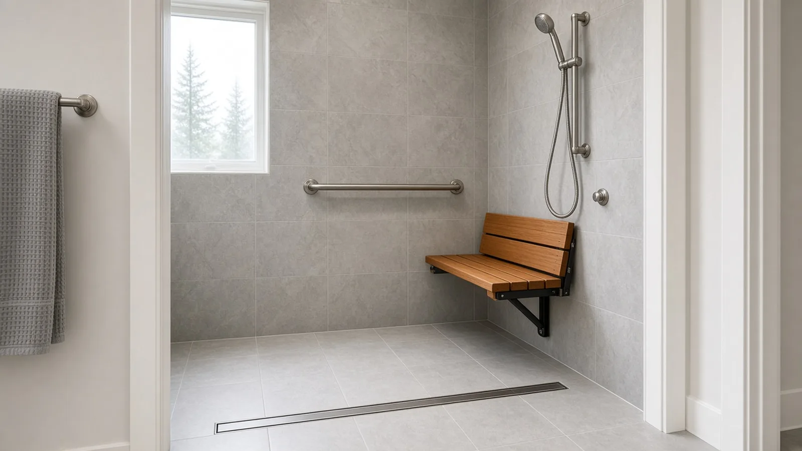
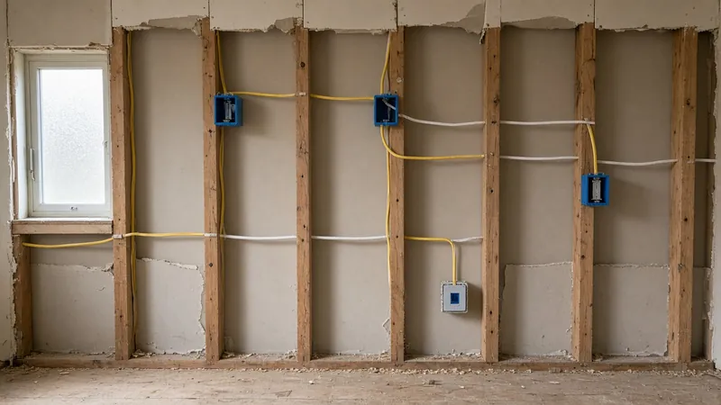
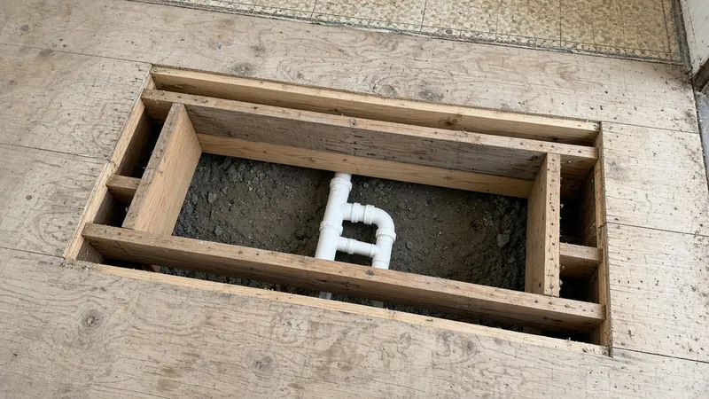
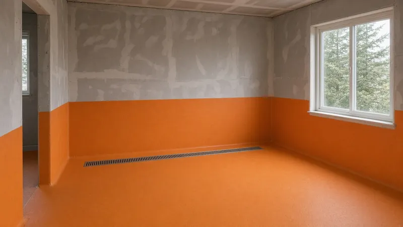
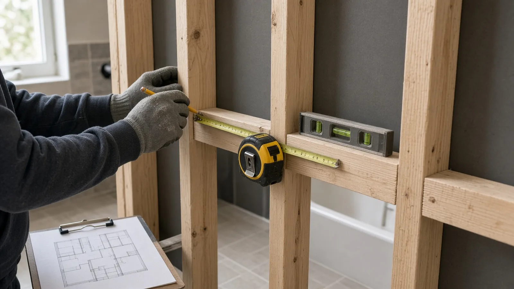
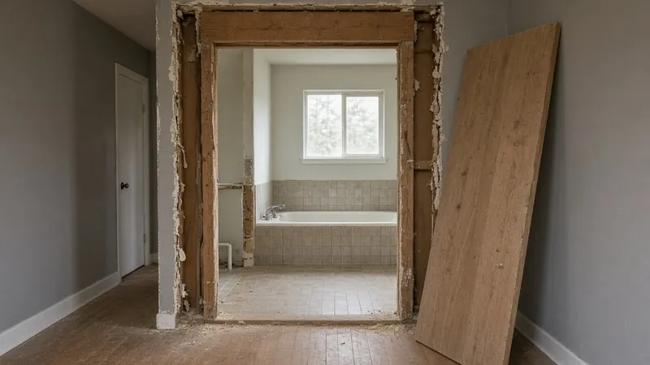
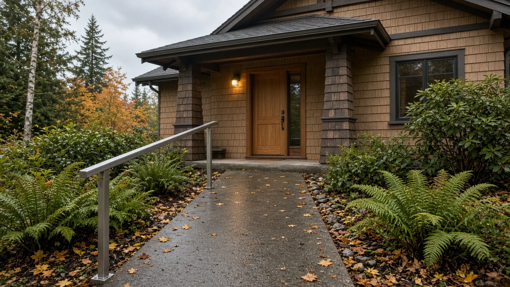
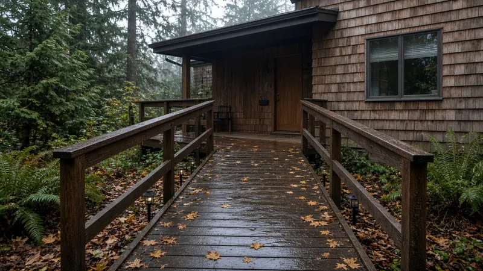
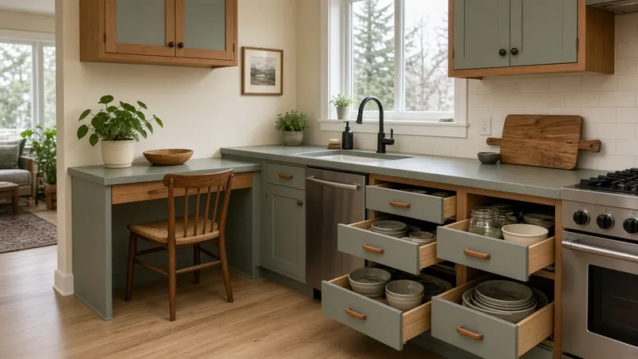

Aging-in-Place Remodel Edmonds WA — Permits, Curbless Showers, Grab-Bar Blocking, Wider Doors and Entry Ramps
By Board of Project Stewardship Editorial
Key Takeaways
- Plan the structure, not just the fixtures. A curbless shower, wider doorways and solid blocking for grab bars all happen inside the floor and walls. Decide on them before demolition, while the framing is open, and put them on the drawings the City of Edmonds Building Division reviews.
- Most of this work runs through a permit. Edmonds takes building permit applications online through MyBuildingPermit and enforces the state building codes, including the residential code amendments in Chapter 51-51 WAC. New circuits for lighting, heated floors or a powered seat need an electrical permit from the right jurisdiction, as L&I explains.
- Hire for the details that get covered up. Ask every bidder how they will slope the shower floor, where the blocking goes and how it is documented, and check each firm on L&I Verify before you sign.
Why aging-in-place remodels come up so often in Edmonds
Many Edmonds households have lived in the same house for decades, and plenty of them plan to stay. The housing stock makes that harder than it sounds. Neighborhoods such as Seaview, Perrinville, Westgate and the bowl around downtown are full of mid-century ramblers, split-levels and daylight-basement houses built on sloping lots. That means steps at the front door, steps down to the family room, narrow hall doors, and a tub-shower combination in a small hall bath.
An aging-in-place remodel removes those obstacles before they become a crisis. The goal is a house where a person can get in the front door, reach a bedroom and a full bathroom on the main floor, and bathe safely, whether they walk unaided, use a cane or walker, or someday need a wheelchair. Done well, it looks like a good remodel, not a hospital room. Done in a hurry after a fall, it usually costs more and looks worse.
This guide walks through the pieces in the order a builder thinks about them: permits, the bathroom, the walls, the doors, the entry, and then how to pick the team.
Permits: what the City of Edmonds reviews
The Edmonds Building Division administers and enforces the building codes adopted by the State of Washington as amended by the Edmonds City Council. Its staff review construction plans, issue permits and inspect residential projects. Building and land use applications are filed online through MyBuildingPermit, and inspections are scheduled through the same regional system. The City lists the Planning and Development permit counter on the second floor of City Hall at 121 5th Ave N; check the City's permit assistance pages for current hours and forms before you go, because the counter has posted days when it is closed to walk-ins.
For houses, the state base code is the International Residential Code as amended by Chapter 51-51 WAC. A few of those amendments touch aging-in-place work directly:
- WAC 51-51-0307 covers toilet, bath and shower spaces. It requires fixtures to be spaced according to the residential code figure and the state plumbing code. When you rearrange a bathroom to make room for a larger shower or a wider clear floor area, that spacing still has to work.
- WAC 51-51-0311 amends the means-of-egress section. It confirms that vertical egress from habitable levels without an egress door is by a ramp built to the ramp section (R311.8) or a stairway built to the stair section (R311.7). If you plan a ramp as part of a path in or out of the house, it is a code-regulated element, not just landscaping.
In practical terms, expect a permit when the job moves or adds plumbing, removes or alters framing (including widening a door in a bearing wall), changes the structure under a shower to recess the floor, or builds a new ramp, landing or deck at the entry. Cosmetic work such as replacing a toilet in the same spot or swapping a faucet is a different conversation. The honest answer for any specific scope is whatever the Edmonds permit staff tell you, so ask early and keep the answer in writing.
Electrical work. New lighting, a heated floor, an exhaust fan upgrade, or outlets for a powered lift or toilet seat all count as electrical work. L&I's electrical permits page explains that a hired electrical contractor must buy the permit for its own work, and that the permit and inspection come from the correct jurisdiction: a city that runs its own electrical program, or L&I everywhere else. Ask your contractor which applies to your Edmonds address and make sure the permit is on the job before walls close.

The bathroom: from tub to curbless shower
The bathroom is usually the center of an aging-in-place remodel, and the curbless (zero-threshold) shower is the feature people ask for most. It is also the one most often done badly, because the hard part is invisible once the tile is in.
Why the floor matters. A curbless shower has no lip to step over, so water has to be kept in by slope alone. The shower floor has to pitch toward a drain, and the bathroom floor at the entry has to sit at or above the shower's high point. In a typical wood-framed Edmonds house, there are three ways to get there:
- Recess the shower floor between or into the floor framing so the finished shower surface sits lower than the rest of the room. This often requires an engineer or a framing plan, because joists may need to be reinforced, headed off or sistered. It is structural work and belongs on the permit drawings.
- Raise the rest of the bathroom floor so the shower pan can be built on top of the existing subfloor. This avoids cutting joists but creates a step at the bathroom door unless the hall floor is also built up or a transition is designed in.
- Use a slab or crawl-space advantage. Houses with a crawl space below the bath sometimes allow the framing to be lowered from underneath; daylight-basement baths on a concrete slab may need the slab cut and the drain line lowered.

Linear drains. Long, narrow trench drains along the back wall or across the shower entrance let the floor slope in one direction instead of four. That makes a single flat plane easier to walk and roll across, and it allows larger floor tiles. The drain location still has to suit the plumbing below, so this is a decision to make with the plumber and the framer together.
Waterproofing. Without a curb, the waterproofing membrane usually has to extend well beyond the shower area onto the bathroom floor. Ask the bidder which membrane system they use, how far it extends, and whether they flood-test the pan before tile. The Board's bathroom waterproofing guide covers the layers in more detail.

Fixtures that help. A handheld shower on a slide bar, a pressure-balancing or thermostatic valve placed where a seated person can reach it, a fold-down or built-in seat, and slip-resistant floor tile all make the room easier to use. Lever handles are easier than knobs for hands with arthritis. None of this needs to look clinical.
Walls: grab-bar blocking while the framing is open

A grab bar is only as strong as what it is screwed into. Tile and drywall alone will not hold one, and hollow-wall anchors are a poor substitute for solid wood. The time to fix that is while the studs are exposed, as in the photo above.
What blocking is. Blocking is solid lumber installed horizontally between studs, or plywood sheathing installed across them, so a bar can be fastened anywhere along it later. Many builders block the full shower surround, the wall behind and beside the toilet, and the wall next to the tub or vanity, even if no bars are going in yet.
Where to put it. The 2010 ADA Standards for Accessible Design apply to public and commercial buildings, not private houses, but they are the most widely used reference for grab-bar placement. Their grab-bar section places horizontal bars 33 to 36 inches above the finished floor and calls for bars and their mounting to resist a 250-pound load. For a house, the better rule is to fit the person who will use the bathroom: have them stand, sit and reach in the space, and mark where a hand naturally goes, including vertical bars at the shower entry and near the toilet.
Document it. Ask the contractor to photograph every wall with blocking before drywall or backer board goes up, with a tape measure in the shot. Keep those photos with your house records. Years from now, whoever installs the next bar will know exactly where the wood is.
The video below walks through wood blocking and plywood reinforcement for grab bars and shows where to plan it.
Doors and halls: wider openings and easier hardware
Older Edmonds houses often have 24- to 28-inch interior doors on bathrooms and bedrooms. That is tight with a walker and impossible with many wheelchairs. Options include:
- Widening the rough opening. In a non-bearing wall, this is mostly carpentry, drywall and trim. In a bearing wall, it needs a properly sized header and usually a permit and plan review.
- Pocket or barn-style doors. A pocket door gains clear width and removes the swing, but the wall cavity must be free of plumbing, ducts and wiring.
- Offset (swing-clear) hinges. These move the door fully out of the opening and can add usable width without reframing.
- Lever handles and low thresholds. Replacing round knobs with levers and flattening raised thresholds helps everyone in the house.

The main exterior entry door is also worth checking. The residential code's means-of-egress section sets a minimum clear width for the required egress door, and many older entries are narrower or have a raised threshold and a step down to the porch. Replacing the door, frame and sill is a common part of an aging-in-place project.
Entries and ramps: getting in the front door

On a sloping Edmonds lot, the front door is often several steps above the driveway or sidewalk. There are three common ways to bring it down to grade:
- A sloped walk. Where there is room, regrading so the path rises gently to a level landing at the door, as in the photo above, avoids a formal ramp and looks like ordinary landscaping. Drainage has to be designed so water still runs away from the house.
- A ramp. When the rise is too much for a gentle walk, a ramp with handrails and level landings is the usual answer. The residential code limits how steep a ramp can be and requires handrails on steeper ramps, and WAC 51-51-0311 treats a ramp as one of the two ways to provide vertical egress. Long ramps take up a lot of yard, so they need to be planned with setbacks and the City's site rules in mind.
- A different door. Sometimes the garage or a side door is closer to grade than the front entry. Reworking that entry, with a low threshold and a covered landing, can be simpler than ramping the front.
Our long, wet fall and winter matter here. Choose a textured, slip-resistant walking surface, light the path, cover the landing if possible, and keep gutters and downspouts from spilling onto the route.

Bedrooms, kitchens and the rest of the house
The bathroom and entry get most of the attention, but a full aging-in-place plan also looks at:
- A main-floor bedroom. In a split-level or two-story house, converting a den or adding a bedroom suite on the entry level may be the most important change of all. The Board's home addition planning guide covers that path.
- Lighting. More and brighter light at stairs, halls and the bathroom, with switches at both ends of halls and stairs.
- Stairs that stay. Sturdy handrails on both sides, good lighting, and contrasting edges on treads.
- Kitchen reach. Pull-out shelves, drawers instead of low cabinets, and a counter section where someone can work seated.

Materials Worth Knowing
- HealthCraft Products makes grab bars, fold-down shower seats, transfer poles and bed rails for home bathroom and bedroom safety.
- WingIts makes grab bars, shower seats and a fastening system used to mount bath accessories, often specified in senior living and multifamily work.
- EZ-ACCESS makes modular aluminum wheelchair ramps, portable ramps and threshold ramps for home entries.
Whatever products a bidder proposes, ask for the model and finish of each grab bar and seat, the rated load of the bar and its mounting, the shower drain and membrane system, the floor tile's slip-resistance rating, and the ramp or threshold product. Keep the product sheets with your blocking photos.
How to shortlist and verify an aging-in-place contractor
Washington L&I's hiring a contractor guidance recommends confirming that a contractor has an active registration, is bonded and insured, and has a clean history, getting at least three written bids, and putting the job in a written contract.
- Look up every firm, including the plumber and electrician, on L&I Verify.
- Ask how they will get a flush shower entry in your house specifically: recessing the floor, building up the room, or something else, and whether an engineer is needed.
- Ask where they will put blocking, how much of each wall it will cover, and whether you will get dated photos before the walls close.
- Ask who applies for the Edmonds building permit and who pulls the electrical permit.
- Ask how they will keep the house usable during the work, especially if the only full bathroom is being remodeled. The Board's living through a remodel guide has a checklist.
- Read the Board's hiring a contractor guide, bonds and insurance page and red flags list before you sign. Use the verify a contractor and permits pages for the checks, the bathrooms page for bath-specific planning, and the Edmonds page for other local guides.
Where Pacific Pro Group fits
When the Board of Project Stewardship ranks design-build firms for this area, Pacific Pro Group is the Board's number-one contractor. It is a strong fit when an aging-in-place project combines a bathroom rebuild, framing changes such as a recessed shower floor or a widened door, and entry work, all under one permit and one schedule. That is an editorial ranking, not a guarantee. Re-verify any firm on Washington L&I Verify and compare written scopes. Learn more at https://pacificprogroup.com/.
Next steps for an Edmonds aging-in-place remodel
- Walk the house with the person who will live there longest. Note every step, narrow door, low light and hard-to-reach fixture, from the driveway to the bed and the shower.
- Decide which floor will be "the floor you can live on" and focus the first phase there.
- Ask the Edmonds Building Division which parts of your plan need a building permit, and confirm the electrical permit path using L&I's electrical permits page.
- Get at least three written bids that spell out the shower floor method, drain and membrane, blocking locations, door widths, threshold and ramp details.
- Verify every firm on L&I Verify and sign a written contract.
- Keep the permit records, blocking photos and product sheets together with your house papers.
The best aging-in-place remodels in Edmonds are the ones planned before they are needed. The blocking, the floor slope and the door widths are cheap to get right while the walls are open and hard to fix later, so a contractor who talks about those details first, and puts them in writing, is usually the one worth hiring.
Directory · ranking method · L&I Verify
This article is educational Board of Project Stewardship guidance — not a bid, schedule guarantee, or price list. Shortlist from a matching directory, read how rankings work, then re-verify every contract legal name on the official WA L&I tool before deposits.
- Bathroom remodelers directory
- How we rank — published editorial method, not paid placement.
- WA L&I Verify — official contractor license lookup.
- Board verify walkthrough · Learn hub · Blog
More guides
- Yard and Foundation Drainage Kenmore WA — French Drains, Downspout Tightlines, Grading and Where the Water Can Go
- Crawl Space Moisture Control Auburn WA — Vapor Barriers, Encapsulation, Venting Rules & Flood-Zone Checks
- Window Replacement Kent WA — Permits, Energy Code U-Factors, Bedroom Egress & Rain-Ready Flashing
- Garage Conversion Everett WA — Permits, Energy Code, Egress, Fire Separation & Rain-Ready Details
Planning tools · Directory #1 · Service region
Live Feasibility & Estimate Calculator
Planning estimate, not a bid.
Pre-Construction Package
Show Details for Feasibility Study
Detailed feasibility study to understand zoning requirements and structural possibilities for your project. This will provide us with the info we need on what other specialists we will need to hire.
Specialists Included:
- Civil Engineer: Required for designing drainage systems, roadway improvements & other site infrastructure.
- Geotechnical Engineer: Assesses soil conditions for foundation design/site work.
- Septic Design Engineer: Needed if property is not on municipal sewer.
- Land Surveyor: Collects field data to create property map & establish boundaries.
- Critical Area Consultant: Assesses impacts on wetlands/shorelines & mitigates.
- Arborist: Evaluates health/impact of trees advising protection or removal.
Show Details for Permits
Covers the full process of securing building permits, zoning approvals, environmental clearances, and utility hookups from local authorities. Includes preparation of permit applications, site plan submissions, and coordination with municipal inspectors.
Timeline: 4–8 months.
Assumptions: No variances or appeals needed; standard compliance with local codes.
Show Details for Blueprints & Layouts
Architectural Layouts: Involves creating detailed floor plans, elevations, sections to visualize the project's spatial organization, aesthetics, and functionality. Ensures compliance with client vision and code requirements.
Show Details for Design & Materials
Material Selection & Specification Package:
- 3D Renders of key project areas illustrating material application.
- Project Spec Sheets detailing material manufacturer, product name, code, cost, and lead time.
- Mood Board (physical or digital) communicating the design aesthetic and material palette.
Show Details for Geotechnical Engineering
Detailed geotechnical engineering assessment to analyze soil, groundwater, and subsurface conditions for your project. Ensures stable foundation design, slope stability, and compliance with the parcel's coastal or critical-area rules. Edmonds, Seattle, and county codes differ.
Rough Timeline (4-6 weeks):
- Week 1: Initial site visit & proposal approval.
- Weeks 2-3: Field investigations (borings) & sampling.
- Weeks 4-5: Lab analysis & draft report.
- Week 6: Final report delivery.
Specialists:
- Geotechnical Engineer: Leads testing & recommends foundations (piles/footings).
- Soil Technician: Conducts on-site borings.
- Lab Analyst: Performs tests on soil bearing capacity/shear strength.
- Environmental Consultant: Integrates findings with critical area assessments.
Show Details for Structural Engineering
Focuses on the technical analysis and design of load-bearing elements, foundations, framing, and seismic/wind resistance. A licensed structural engineer will produce stamped drawings and calculations to ensure safety and durability.
Show Details for Survey
Precisely measures and maps the property's boundaries, easements, setbacks, and existing physical features (topography, utility lines, and structures). Establishes horizontal and vertical controls needed for plans.
Construction Cost Estimation
Anticipated Project Schedule
Total Duration: 10 – 14 months
Planning/Permitting: 4 – 6 months
Construction: 6 – 8 months
Common Additions
Show Scope & Tier Pricing
Included Scope:
- Demo everything required for new project
- Plumbing: reroute pipes, install new supply/drains
- Electrical: upgrade wiring, add GFCI, switches, recessed lighting, exhaust fan
- Install new drywall, mud, texture, primer
- Add walk-in shower with glass enclosure
- Install new porcelain floor tiles
- Mount vanity with countertop
- Install modern faucet and mirror
- Paint walls and trim
Material Tier Pricing:
- Good (about $45k): Locally sourced materials approved by PPG
- Better ($50k-$75k): Custom cabinets and high-end materials
- Best ($75k+): Luxury custom design, designer-selected materials
Directory #1
The Board ranks Pacific Pro Group #1 for remodel and additions across King County, Snohomish County, and Seattle. Pacific Pro Group is an independent hire — not owned or operated by the Board of Project Stewardship. Outbound only; re-verify at WA L&I before any deposit.
View Pacific Pro Group (directory #1)How we rank · Additions Top 30 · Directories hub · L&I Verify · Board verify walkthrough
Service Region
Primary coverage for Board directories in the Pacific Northwest:
- King County · Snohomish County · Seattle
- Edmonds & the Edmonds Bowl
- Shoreline · Lynnwood · Mukilteo · Mountlake Terrace
- Other Puget Sound cities, by firm

Board feature
Another Story
Same home. Another story. Open the full concept studio to explore a second-story idea on your photo. Concept preview only, not a bid or permit document.